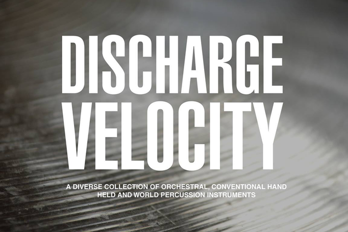

Here you can find noteworthy projects Josh has been a part of. If you would like more information about something in particular head over to the contact page to get in touch.
Discharge Velocity - 1.618
A diverse collection of orchestral, conventional hand held and world percussion instruments.
All sounds recorded at high 24-bit 88.2kHz resolution through a classic Focusrite transformer-based mic preamplifier ISA428.
A valuable practical and creative resource for music production and innovative sound design.